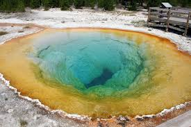

Como descrever um ícone? Descoberto em 1807 por Lewis e Clark, nada que você disser será capaz de fazer justiça ao Yellowstone National Park (Parque Nacional de Yellowstone) , uma das criações mais espetaculares da Mãe Natureza. Forças geotérmicas dinâmicas ocultas logo abaixo da superfície deram origem à série impressionante de montanhas, rios, cânions, termas e gêiseres, todos cercados por animais – do maior dos mamíferos ao menor dos pássaros. O fascínio que ele causa é grande, evidenciado pelas hordas de visitantes todos os anos, mas é possível escolher seu próprio espaço neste majestoso parque, caso você planeje bem a viagem.
Criado em 1872, o Parque Nacional de Yellowstone é o mais antigo e talvez o mais famoso parque nacional dos Estados Unidos. Situado a extremo noroeste de Wyoming (a cerca de 90 quilômetros ao norte do Jackson Hole) e estendendo-se ao longo das fronteiras do estado em Idaho e Montana, o Yellowstone contém cerca de 9.000 quilômetros quadrados de lagos de águas cristalinas, impressionantes desfiladeiros, vastas pradarias e quedas d'água. No entanto, o parque é mais famoso por seus gêiseres
O Yellowstone foi o Primeiro Parque Nacional implantado no mundo, com recursos governamentais, em 1872. Criou o conceito que se espalhou pelos quatro cantos e ajudou a preservar santuários da natureza. É o mais bonito e grandioso de todos os Parques Nacionais Americanos.
Yellowstone tem drama: é aqui que os bisões vagam, as cachoeiras caem e as montanhas se erguem. Além disso, há a parte geotérmica: fontes termais, gêiseres e piscinas de lama ferventes. O ponto mais famoso é o Old Faithful, um gêiser que entra em erupção regularmente há décadas.
No entanto, os intervalos entre suas erupções, considerados breves em termos geológicos, são muito longos em termos históricos. Não há um consenso sobre quando será sua próxima erupção, mas estima-se que ela ocorrerá daqui a 100 mil anos.
